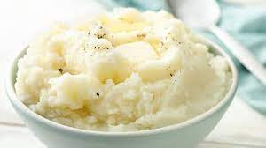

Mashed Potato

Big ol mashy taters ferda
- 1x Russet Tater
- 1x Tbsp butter
- 1x cup shredded cheddar
- 1x splash of milk
- Salt & Pepper
- Cut the tater in half
- Boil for ~15 minutes (until fork tender) then drain water
- Add butter, splash of milk, and shredded chedda to that biznitch
- Crack some salt and pepper into there if ya want